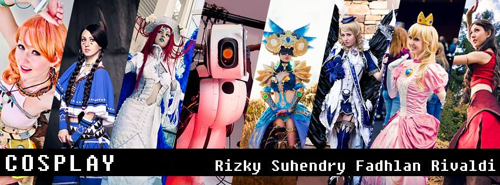
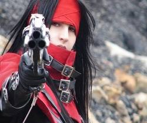
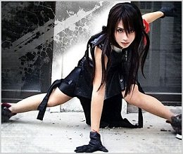
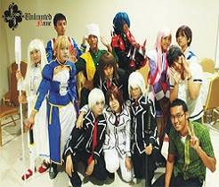

Pinsil Team

- M. Rizky Januari Hrp.
- Suhendry
- Fadhlan R. Nasution
- Muhammad Rivaldi
Cosplay?
- Cosplay (Costume Play) diambil dari kata Kosupure (Jepang)
- Mengenakan pakaian, aksesori & rias wajah seperti karakter anime, manga, dongeng atau game.
- Sedangkan pelakunya sendiri disebut Cosplayer
- Mengenakan pakaian, aksesori & rias wajah seperti karakter anime, manga, dongeng atau game
- Orang yang bercosplay di sebut Cosplayer
Sejarah Cosplay
-
- Tahun 1960-an, penggemar cerita dan film fiksi ilmiah di AS sering mengadakan konvensi fiksi ilmiah
- Tradisi penyelenggaraan konvensi fiksi ilmiah sampai ke Jepang dekade 1970-an dalam bentuk acara peragaan kostum (costume show).
- Peragaan "cosplay" pertama kali dilangsungkan tahun 1978 di Ashinoko, Prefektur Kanagawa dalam bentuk pesta topeng konvensi fiksi ilmiah Nihon SF Taikai ke-17
- Kritikus fiksi ilmiah Mari Kotani menghadiri konvensi dengan mengenakan kostum seperti tokoh dalam gambar sampul cerita A Fighting Man of Mars karya Edgar Rice Burroughs
- Yasuhiro Takeda (Direktur perusahaan animasi Gainax) memakai kostum tokoh Star Wars.
- Tahun 1985, Cosplay semakin meluas di Jepang karena menjadi sesuatu hal yang mudah dilakukan
Perkembangan Cosplay
-
- 1. Perkembangan Di Dunia
- 2. Perkembangan Cosplay Di Indonesia
- 3. Perkembangan Cosplay Di Medan
1. Perkembangan Cosplay Di Dunia
-
- AFA (Anime Festifal Asia)
- WCS (World Cosplay Submit)

- Ikut sertanya Brand-brad film atau game ternama dalam membuat event cosplay
2. Perkembangan Cosplay Di Indonesia
-
- Cosplayer indonesia berhasil merebut juara di AFA dan WCS
- untuk event Internasional, indonesia punya penyeleksian di setiap kotanya

- Indonesia juga di sponsori oleh event di luar negri
3. Perkembangan Cosplay Di Medan
-
- Medan adalah kota yang perkembangannya paling pesat di bandingkan dengan kota lainnya di daerah sumatera
- Event Nasional membuat event regional untuk Medan

- Berkembangnya team-team Cosplay
- Munculnya cosplayer baru di setiap event
Pembagian Cosplay
- Cosplay Anime
- Diambil dari karakter animasi
- Cosplay Manga
- Diambil dari karakter Manga
- Cosplay Game
- Diambil dari karakter Game
- Cosplay Tokusatsu
- Diambil dari karakter superhero jepang yang memiliki visual effect
- Cosplay Original
- Karakter yang di buat sendiri oleh pemerannya
Mereka memerankan sesuai gambar dan deskripsi
Efek Dari Cosplay
- 1. Cosplay dapat menambah kreativitas
- 2. Cosplay dapat membuat kita pandai dalam bidang-bidang tertentu
- 3. Mendapatkan teman-teman baru
- 4. Meningkatakan rasa percaya diri